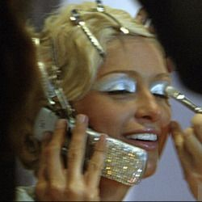

I've adored technology since a young age. Being born in the 90s & growing up in the early 00s gave me so much access to emerging digital technology.
Nostalgic Tech Wishlist:
I'm completely unashamed to say I love a good romance novel. I feel like the ability to escape into the world of a novel is truly magical. I love taking out my Kindle on a rainy day and finding a new book boyfriend.
Recommendations:
How can I live in Chicago and NOT be a foodie? I have over 100 restaurants bookmarked on my Google Maps to try in Chicago as well as the surrounding suburbs.
Recommendations:
I definitely prefer movies from the 90s and early 00s, but oldies such as 'That Touch of Mink' or 'How to Marry a Millionaire' are also on my list of favorites.
Recommendations:
I love everything about traveling except the plane ride. I'm eagerly waiting for instant travel options to happen in my lifetime. I love learning about cultures, visiting interesting places, or just the feeling of relaxing in another place.
My 2024 Travel Wishlist:
Ugh, just nothing more to be said! Similar to my television and movie tastes, I tend to love music from the past. It's the music that feels most authentic, fun, and empowering to me.
Current Favorites:
I go through ebbs and flows when it comes to makeup. Sometimes I love the process of putting on makeup because it can be therapeutic and creative, but sometimes I feel miserable doing it. All in all, anything beauty-related has my heart.
